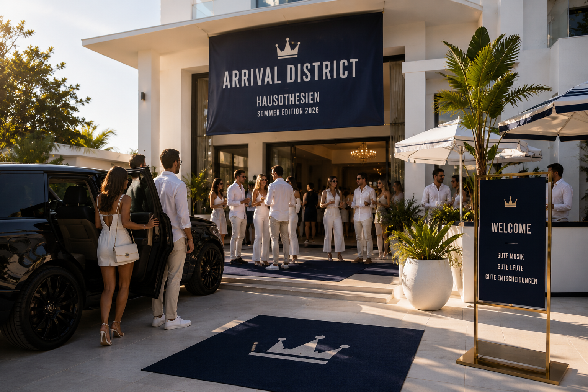
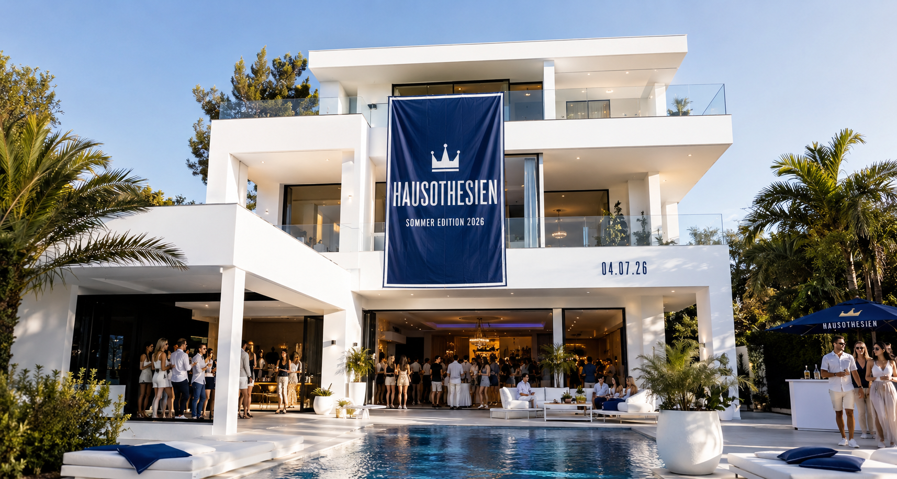
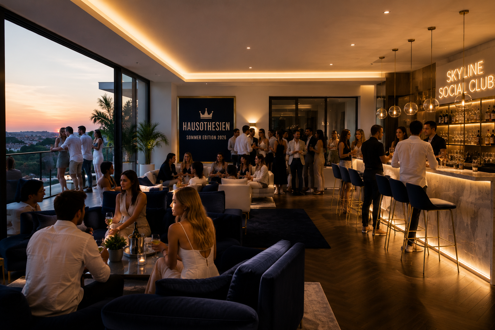
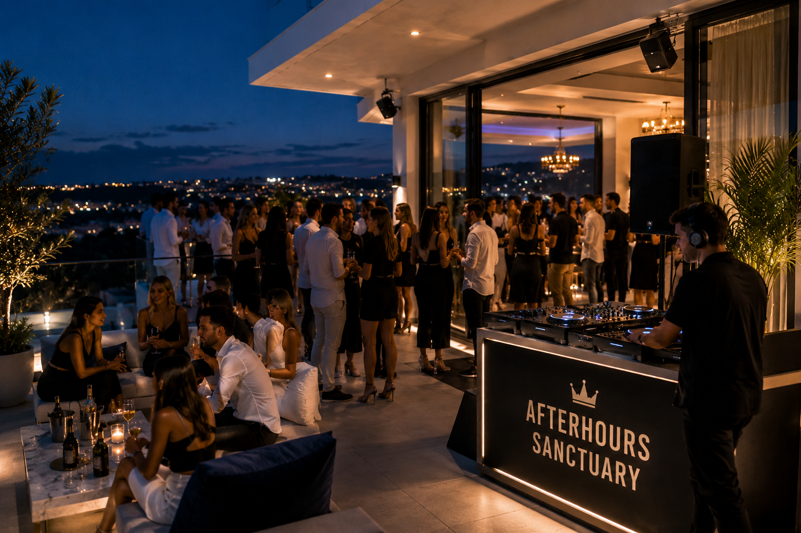
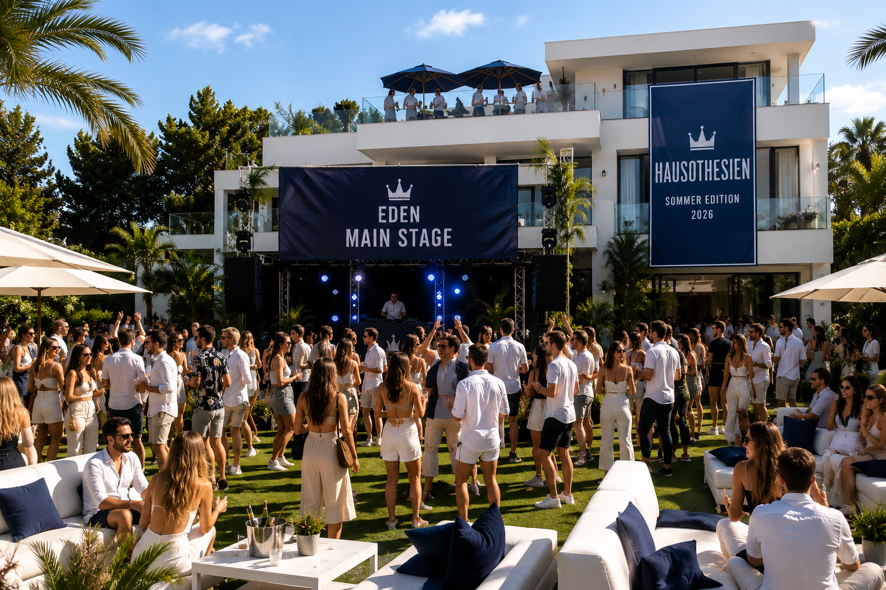
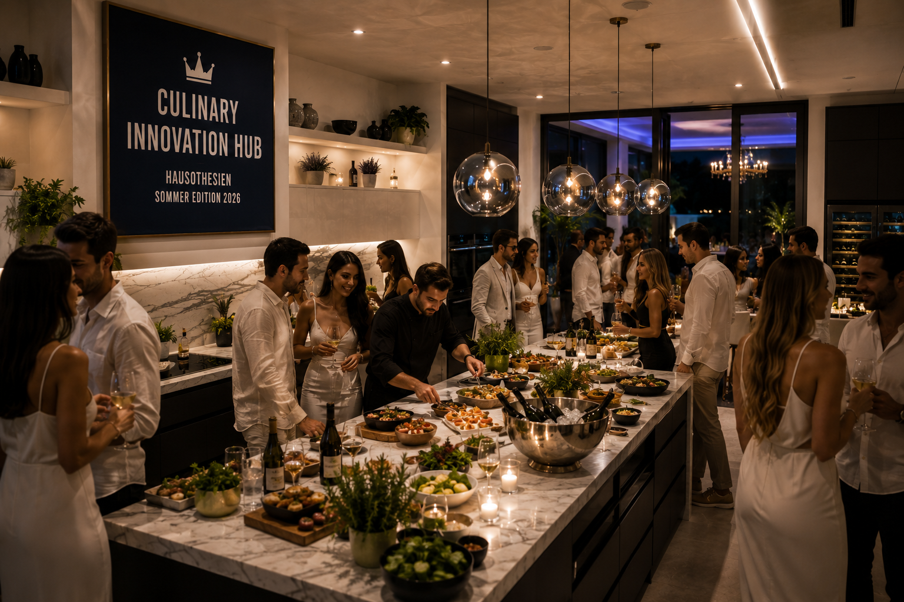

ERDGESCHOSS
ARRIVAL
DISTRICT

ANKOMMEN. EINTAUCHEN. ABHEBEN.
Der Beginn jeder großen Geschichte. Willkommen im Zentrum der ersten Drinks, ersten Gespräche und ersten fragwürdigen Entscheidungen.
Ein Haus. Drei Etagen. Ein Garten. Für einen einzigen Sommertag verwandelt sich Hausothesien in das vermutlich exklusivste Kulturereignis zwischen Düsseldorf und Ibiza.


ANKOMMEN. EINTAUCHEN. ABHEBEN.
Der Beginn jeder großen Geschichte. Willkommen im Zentrum der ersten Drinks, ersten Gespräche und ersten fragwürdigen Entscheidungen.

PREMIUM VIBES. PREMIUM MENSCHEN.
Der Blick über das Geschehen. Für Gespräche mit Tiefgang, Größenwahn und gelegentliche Genialität.

LÄNGER. LAUTER. LEGENDÄR.
Wenn andere Veranstaltungen enden, beginnt dieser Bereich erst richtig. Zeit wird hier zu einem Vorschlag.

OPEN AIR. SONNE. PURES GLÜCK.
Andere Veranstaltungen besitzen Bühnen. Wir besitzen einen Garten. Der Mittelpunkt des Festivals.

GENUSS. INNOVATION. MITTERNACHT.
Ab Mitternacht statistisch betrachtet der wichtigste Raum des gesamten Festivals.
Die verborgenen Säulen einer gelungenen Veranstaltung.
Auch bekannt als Badezimmer. Überraschend hohe Besucherzahlen zwischen 01:00 und 03:00 Uhr.
Das Treppenhaus. Verbindet Welten. Trennt Legenden von Amateuren.
DATUM
BEGINN
ETAGEN
ERINNERUNGEN
Ein Haus. Drei Etagen. Ein Garten. Und vermutlich die meistdiskutierte Hausparty des Sommers.